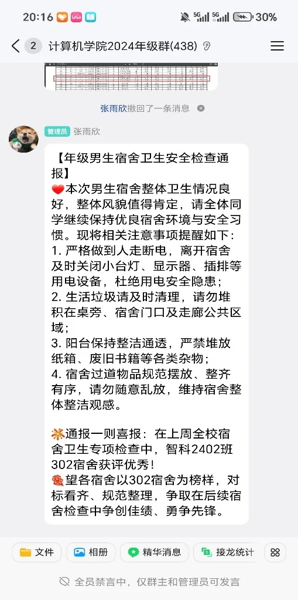
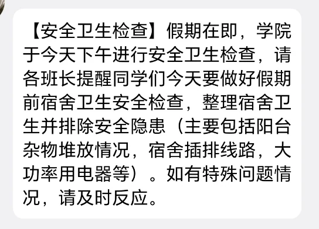
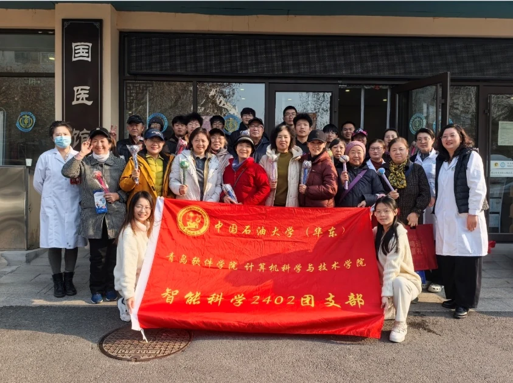

生活委员
统筹协调班级日常事务，服务同学需求，参与物资代订、卫生与安全监督。
CAMPUS
服务同学、记录校园，也在具体事务中积累责任感。
统筹协调班级日常事务，服务同学需求，参与物资代订、卫生与安全监督。
督促内务整理与学业进度，维护积极、友好、互相支持的宿舍氛围。
参与学院活动报道和内容制作，在学院公众号发布二十余篇推文。
CONTENT WORK
内容覆盖校运会、榜样宣传、节目介绍、学习方法、学院会议和文艺活动，累计浏览量 7000+、点赞转发 800+。



